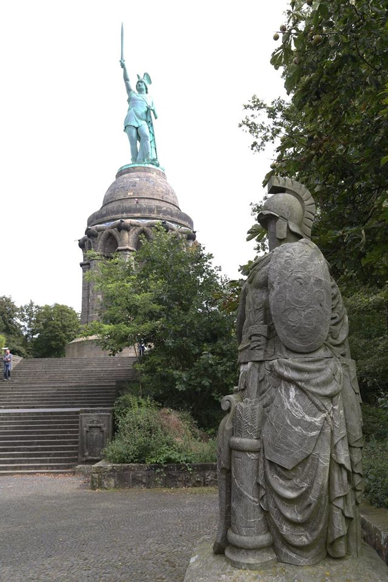

ℌ𝔢𝔯𝔪𝔞𝔫𝔫𝔰𝔡𝔢𝔫𝔨𝔪𝔞𝔩
The Hermannsdenkmal, a colossal metal statue built in the 19th century to commemorate the Battle of the Teutoburg Forest,in which Germanic tribes led by Arminius annihilated three Roman legions, stands outside Detmold on the northeastern slope. Numerous health and holiday resorts are established in the small hill towns situated among beech and spruce forests.